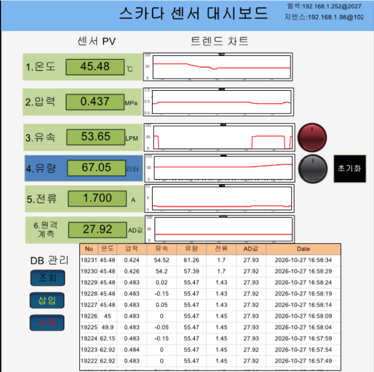

실시간 센서 모니터링
온도·압력·유속·전류·유량의 PV/SV, 설비 연결 상태, 전력·동작시간을 표시하고 실시간 트렌드를 제공합니다.
다양한 필드 센서를 PLC로 계측하고 자동·수동 제어 및 인터록을 구현한 팀 프로젝트입니다. 개인 담당 영역인 Node-RED 웹 모니터링에서는 실시간 데이터 수집, 원격 제어, 이력 및 알람 관리 기능을 독자적으로 구현했습니다.
2026.09.08 ~ 2026.10.06 (130시간) · 3조 Retry 팀 프로젝트. 온도·압력·유속·유량·전류 센서 계측, PLC 제어, HMI/SCADA, 산업용 통신과 IoT 데이터 활용을 통합했습니다.
온도 · 압력 · 유속 · 유량 · 전류 (Node-RED에서 원격 AD값도 표시)
PLC 자동/수동 제어 · 밸브 조작 · 실시간 트렌드 · 이력조회 · 이상 알람
센서·전장 결선 작업에 주도적으로 참여하고, PLC 래더 프로그램 작성과 HMI 화면 구성·데이터 연동을 실습했습니다.
Node-RED 기반 웹 모니터링 시스템 구축, PLC 데이터 수집, 실시간 화면, 설비 제어, MySQL 이력 및 알람 모니터링을 구현했습니다.
MELSEC Q64AD 등으로 아날로그 센서를 계측하고 Siemens PLC에서 펄스 유량 데이터를 처리합니다. HMI와 X-SCADA로 현장 상태를 확인하며, Node-RED 및 MySQL로 웹 모니터링과 이력 관리를 구현했습니다.
온도·압력·유속·전류·유량의 PV/SV, 설비 연결 상태, 전력·동작시간을 표시하고 실시간 트렌드를 제공합니다.
센서 데이터를 MySQL에 저장하고 조회 범위·표시 개수를 선택해 차트와 표로 확인합니다.
센서 초과·고장 및 통신 상태를 감시하고 알람 발생·복구 이력과 조치 상태를 확인합니다.
웹에서 MELSEC·Siemens 밸브 ON/OFF와 상태를 확인하고 센서 설정값, DB 저장 및 화면 갱신 주기를 관리합니다.
온도·압력·유속·유량·전류 센서의 신호를 PLC에서 취득하고, 아날로그 스케일링 또는 펄스 카운팅을 통해 실제 계측값으로 변환합니다. 자동/수동 제어와 인터록, 솔레노이드 밸브 출력은 모니터링 시스템의 현장 제어 기반입니다.
Q64AD 아날로그 입력으로 온도·압력·유속·전류 센서를 계측하고 설정값 비교 및 센서 이상 알람을 처리합니다.
유량 센서 펄스 입력을 계수하고 환산하여 유량값을 표시하며 설비 제어 데이터와 연동합니다.

현장 PLC와 연동한 센서 계측값(PV), 실시간 트렌드, 설비 조작 및 MySQL 데이터 관리를 하나의 X-SCADA 화면에 구성했습니다.
온도(℃), 압력(MPa), 유속(LPM), 유량(L), 전류(A), 원격 계측 AD값을 표시하고 각 센서의 변화 추이를 트렌드 차트로 확인합니다.
대시보드 우측 상단 원형 버튼은 MELSEC PLC 솔레노이드 밸브, 하단 원형 버튼은 Siemens PLC 솔레노이드 밸브 조작용으로 구분했습니다. 옆의 초기화 버튼은 별도 초기화 기능입니다.
조회·삽입·삭제 버튼과 데이터 테이블을 구성해 센서값, 저장 번호 및 측정 시각을 확인합니다.
화면 상단에 MELSEC 및 Siemens의 접속 정보를 표시하여 통합 계측 시스템의 연결 대상을 확인할 수 있습니다.
MELSEC·Siemens PLC 데이터를 통합 수집해 Dashboard 2.0에서 센서 PV/SV, 실시간 트렌드, 연결 상태, 설비 제어 및 시스템 설정을 표시합니다.
센서 계측값, 설정 기준선, 운전 상태, 전력·누적량 및 동작시간 표시
PLC별 밸브 조작 및 상태 확인, 센서 설정값 입력과 시스템 설정 관리
센서 데이터 저장, 조회 기간 및 표시 개수 선택, 표·트렌드 차트 조회
센서별 알람 상태, 발생·복구 이력 및 조치 상태 확인
현장 필드 센서의 계측·PLC 제어 데이터를 X-SCADA와 Node-RED 웹 대시보드로 연결하여 현장 및 원격 환경에서 설비 상태를 확인할 수 있는 통합 모니터링 시스템을 구성했습니다.